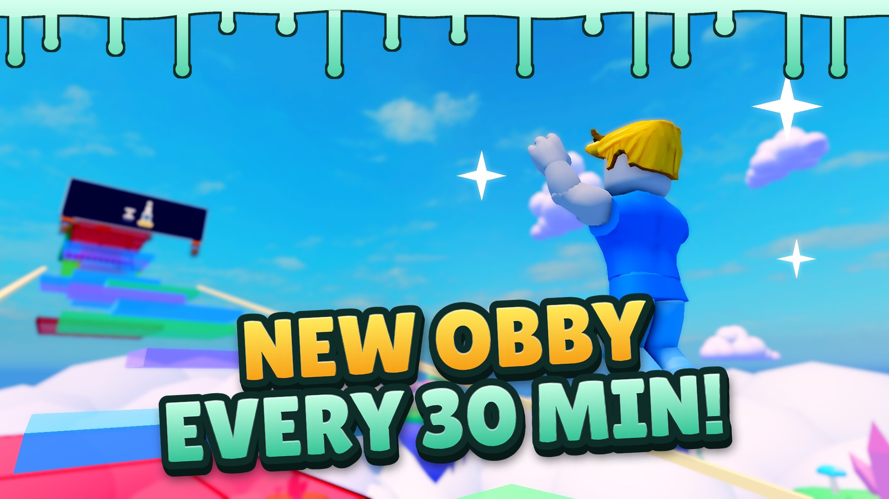
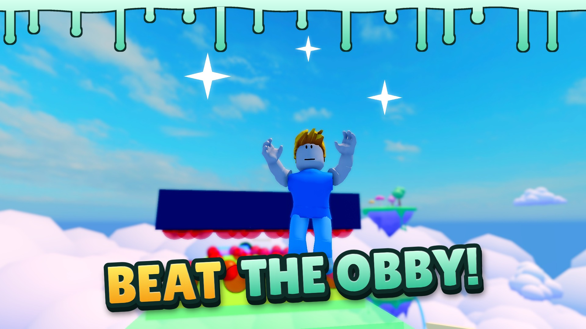
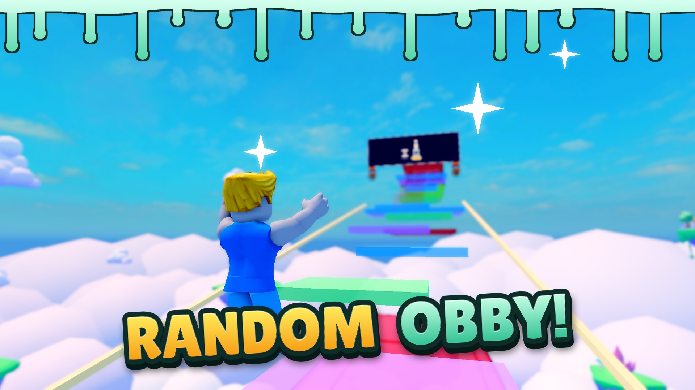
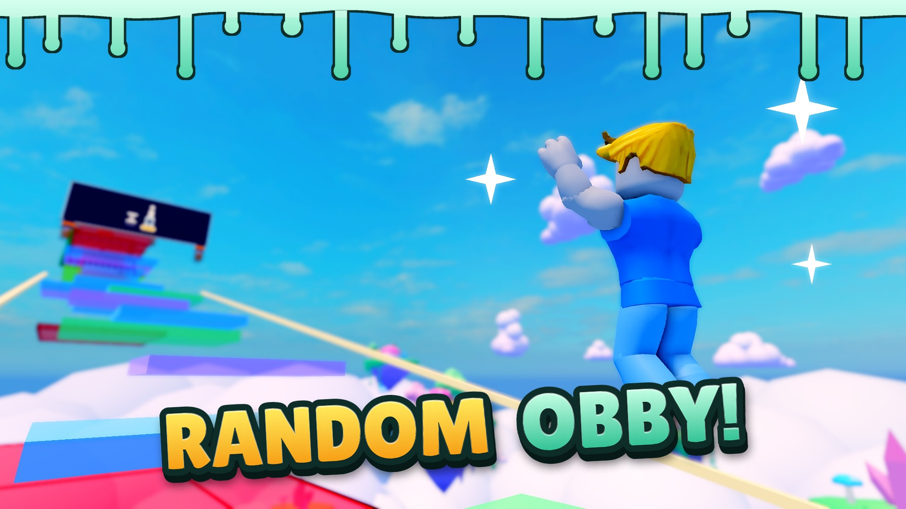
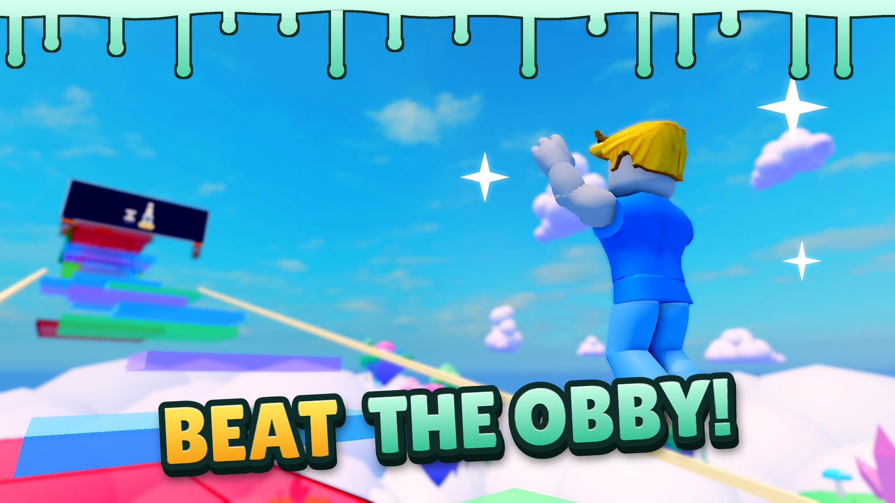
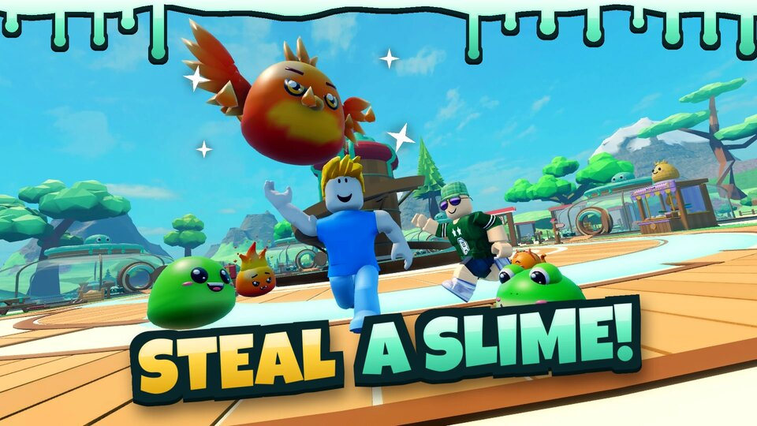

Obby thumbnail: B picked
Steal a Slime, the Goo Gauntlet sky course. 1920×1080, same style as the other thumbnails (Lilita One two-tone caption, mint slime drips, sparkles). Real game frames from a hidden Studio; nothing uploaded.
Decided: pick B with "NEW OBBY / EVERY 30 MIN!" (Merijn, 2026-11-06). Upload it as
thumb-B.jpg.


Caption options (on picture B)



Any picture can take any caption; tell me the combination.
Next to an existing thumbnail

Not checked
- Not seen at the small size of the game page tiles or on a phone.
- The course is random: this one is just one rotation; players will see other sections.
- The jumper is your own avatar (the Studio test player); the follow-pet cloud is hidden for these shots.